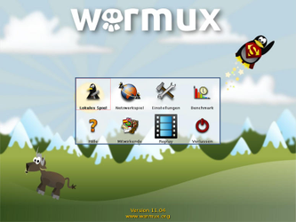
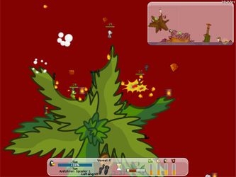

WarMUX
Dieser Artikel wurde für die folgenden Ubuntu-Versionen getestet:
Ubuntu 16.04 Xenial Xerus
Zum Verständnis dieses Artikels sind folgende Seiten hilfreich:
Warmux (früher Wormux) ist ein freier Klon des Spiels Worms und für viele Computer- und Mobile-Plattformen verfügbar. Auf einer 2D-Karte kämpfen in mehreren Runden 2 bis 8 Teams gegeneinander, mit dem Ziel, die gegnerischen Figuren zu töten. Dafür stehen verschiedene Waffen, z.B. Panzerfaust, Dynamit oder Baseballschläger, und Hilfsmittel, z.B. Teleportation oder Fallschirm, zur Verfügung. Die Figuren sind im Unterschied zum Original keine Würmer, sondern die Maskottchen verschiedener Open Source-Projekte. So kann man beispielsweise mit Tux'en oder Firefox'en gegen Gnu's und Pidgin-Tauben spielen. Entweder können mehrere Spieler an einem Computer spielen oder man spielt gegen Computergegner. Der offizielle Server für Online-Spiele wurde eingestellt, es ist aber trotzdem möglich, mit anderen Spielern über ein Netzwerk zu spielen.
Leider wird das Projekt schon länger nicht mehr weiterentwickelt, die letzte Version stammt vom 30.04.2011.
|  |  |
| Hauptmenü | Spielszene |
Installation¶
WarMUX kann direkt aus den Quellen installiert werden [1] .
warmux
 mit apturl
mit apturl
Paketliste zum Kopieren:
sudo apt-get install warmux
sudo aptitude install warmux
Das Programm kann dann sofort gestartet werden [2].
Bedienung¶
Um ein neues Spiel zu starten, klickt man im Hauptmenü auf "Lokales Spiel". Dort kann man Einstellungen zu den Teams und dem Spiel vornehmen und dann das Spiel starten (grüner Haken unten).
Die vollständige Bedienung im Spiel kann man unter "Hilfe -> Tastatur" nachlesen. Hier sind die wichtigsten Tasten für den Anfang aufgelistet:
| Tastenkürzel | |
| Taste(n) | Funktion |
| ← → | Figur bewegen |
| ↑ ↓ | Waffe zielen (Schusswinkel) |
| ⇧ + Pfeiltaste | Langsam gehen / zielen |
| Tab ⇆ | Figur wechseln |
| ⏎ | Sprung |
| ⏎ + ⇧ | Hochsprung |
| Bild ↑ Bild ↓ | Zeitzünder der Waffe einstellen |
| Waffe abfeuern | |
 | Figur / Ziel auswählen |
 | Waffenmenü |
 | Kamera bewegen |
| Strg + Maus | Kamera bewegen |
| Esc | Pausenmenü |
Erweiterungen¶
Karten erstellen¶
Wem die vielen verschiedenen Karten, die bei WarMUX mitgeliefert werden, nicht ausreichen, der kann eigene gestalten.
Dafür benötigt man vier Bilddateien:
| Erweiterungen | ||
| Dateiname (Beispiel) | Beschreibung | Einschränkungen |
| map.png | Die Karte, auf der gespielt wird | mind. 3000x1500px, Hintergrund transparent |
| sky.jpg | Hintergrund | mind. Größe der Karte |
| preview.jpg | Vorschaubild | 300x225px |
| windparticules.png | Windpartikel im Hintergrund | optional, im Bild nur den größten Partikel zeichnen, Hintergrund transparent |
Außerdem braucht man eine Textdatei config.xml [3] mit folgenden Aufbau und Inhalt:
1 2 3 4 5 6 7 8 9 10 11 12 13 14 15 16 17 18 19 20 21 22 23 24 25 26 27 28 29 30 31 32 33 34 35 36 37 38 39 40 | <?xml version="1.0" encoding="utf-8"?> <!DOCTYPE resources SYSTEM "../map.dtd" []> <resources> <author> <name>YOUR NAME</name> <nickname>YOUR NICKNAME</nickname> <email>YOU AT MAIL DOT COM</email> <country>YOUR COUNTRY</country> </author> <surface name="sky" file="NAMEOFSKYFILE.jpg" /> <surface name="map" file="NAMEOFMAPFILE.png" /> <surface name="preview" file="NAMEOFPREVIEWFILE.jpg" /> <name>MAP NAME</name> <water>WATER TYPE</water> <nb_mine>5</nb_mine> <is_open>1</is_open> <sprite name="wind_particle"> <image file="NAMEOFWINDPARTICULES.png"> <grid pos="0,0" size="X,Y" array="1,1"/> </image> </sprite> <wind> <nbr_sprite>6</nbr_sprite> <need_flip>1</need_flip> <mass>5.0</mass> <wind_factor>8.5</wind_factor> <air_resist_factor>0.2</air_resist_factor> <gravity_factor>0.2</gravity_factor> <rebounding>true</rebounding> <rebound_factor>3.3</rebound_factor> </wind> <music_playlist>NAMEOFMUSICFILE</music_playlist> </resources> |
Diese fünf Dateien legt man in einen neuen Ordner und kopiert diesen, im Homeverzeichnis, nach ~/.warmux/map/ oder nach /usr/share/games/warmux/map/. Dann sollte die Karte beim nächsten WarMUX-Start angezeigt werden.
Ausführliche Informationen zu diesem Thema fand man früher auf der WarMUX-Website. Nach ihrer Einstellung kann man nur noch auf archive.org nachlesen.
Quelle der obigen Informationen: Map-Creation auf archive.org 
Figuren erstellen¶
Es ist auch möglich, sich eigene Spielfiguren zu erstellen. Da dieses Thema nicht trivial ist, soll an dieser Stelle auf die archivierte Version der WarMUX-Dokumentation verwiesen werden: Skin-Creation auf archive.org

Infobox¶
| WarMUX | |
| Originaltitel: | Wormux |
| Genre: | Strategie |
| Sprache: | |
| Veröffentlichung: | 2011 |
| Entwickler: | Warmux Team |
| Systemvoraussetzungen: | - |
| Medien: | Download |
| Strichcode / EAN / GTIN: | - |
| Läuft mit: | nativ |
Links¶
Gna!-Projektseite
(hier sind weitere Downloads zu finden)
Hinweis:
Es gibt immer noch Links auf die Website wormux.org im Zusammenhang mit dem hier beschriebenen Spiel, allerdings hat diese Seite nichts mit WarMUX zu tun!
- Erstellt mit Inyoka
-
 2004 – 2017 ubuntuusers.de • Einige Rechte vorbehalten
2004 – 2017 ubuntuusers.de • Einige Rechte vorbehalten
Lizenz • Kontakt • Datenschutz • Impressum • Serverstatus -
Serverhousing gespendet von